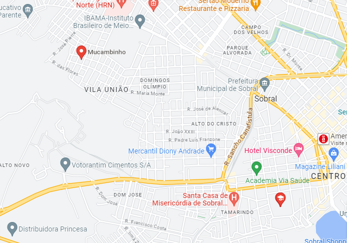
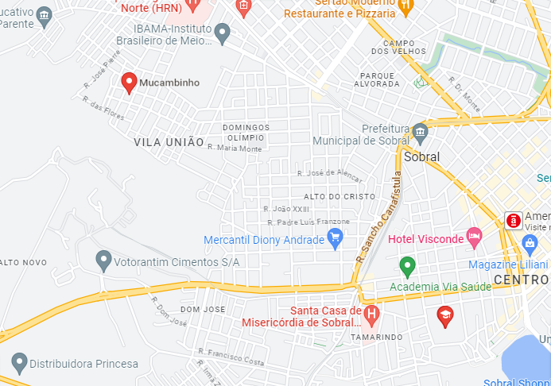

Rota do Intracampus
O Ônibus Intracampus funciona durante os dias letivos dando suporte ao Refeitório Universitário, percorrendo trajeto que interliga os prédios da UFC: Mucambinho, SPA e Faculdade de Medicina.
Não perca a próxima parada!

O Ônibus Intracampus funciona durante os dias letivos dando suporte ao Refeitório Universitário, percorrendo trajeto que interliga os prédios da UFC: Mucambinho, SPA e Faculdade de Medicina.
